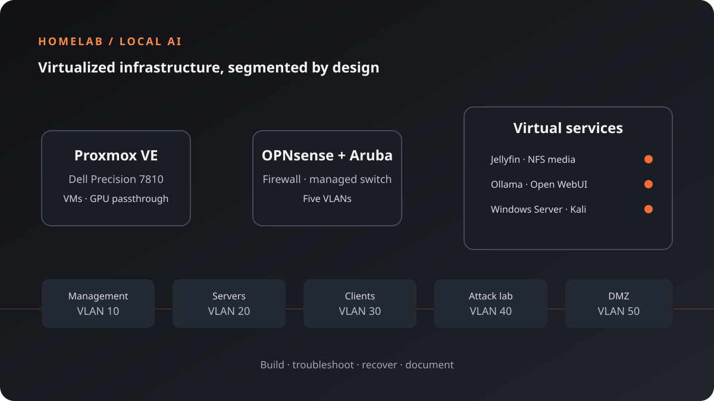

Building a Segmented Homelab for Virtualization and Local AI
I turned a locally purchased Dell Precision 7810 into a Proxmox homelab for virtualization, network segmentation, media services, security practice, and local AI. The setup combines an Aruba managed switch, a multi-port NIC, OPNsense, Docker services, and virtual machines.
The most useful lessons came from the parts that did not go smoothly. During VLAN changes, I lost access to the Proxmox host. I also had a display problem, then discovered a failing SSD that caused crashes. Recovering from those issues meant troubleshooting the physical hardware, network paths, host configuration, and backups—not just rebuilding virtual machines.

- Dell Precision 7810 with 72 logical CPU cores and an NVIDIA GeForce RTX 3060 (12 GB VRAM)
- Proxmox VE, OPNsense, Aruba 2930-series managed switching, and a quad-port NIC
- Five VLANs for management, servers, clients, an attack lab, and a DMZ
- Ubuntu Server VM running Docker services, including Jellyfin and a local AI stack
- Backups used to recover virtual machines after SSD replacement and a Proxmox reinstall
Building the VLAN layout
I organized the network into five segments: VLAN 10 for management, VLAN 20 for servers, VLAN 30 for clients, VLAN 40 for the isolated attack lab, and VLAN 50 for the DMZ. OPNsense provides firewalling and routing, while the Aruba switch carries the VLANs to the connected systems.
The first major challenge was getting the VLAN configuration right without losing the management path. My Wi-Fi clients were on a 192.x.50.x subnet and could not reach the host on the 192.x.10.x management subnet after the VLAN changes. The server was no longer reachable from my normal wireless connection, which made it clear that I needed a recovery route that did not depend on that path.
I connected my laptop to the network over Ethernet, assigned it a static IP address on the management network, and used that wired path to reach the infrastructure and correct the configuration. It was a practical reminder to plan management access and verify the switch, firewall, and host VLAN settings as a complete path—not as separate checkbox items.
When the server had no useful display
I could not get a local monitor working through the RTX 3060 during troubleshooting. To regain console video, I temporarily swapped in a Quadro K4200. That let me inspect and repair the system locally while I restored network access.
Having alternate display hardware available was useful, but the wired laptop connection was just as important: it gave me a separate route to the management network when Wi-Fi was on the wrong subnet.
Finding and replacing a failing SSD
The workstation had been bought locally, and the server began crashing unpredictably. I ran SSD tests to check the storage rather than treating each crash as a software problem. The tests confirmed that one of the SSDs was failing.
After replacing the drive, I reflashed Proxmox and restored the backups I had made beforehand. The virtual machines came back, but the recovery was not finished: some VLAN tag settings in the Proxmox configuration still needed to be updated. Restoring VM backups alone did not reconstruct every host-level network setting. Tracking down those remaining tags took additional troubleshooting before the VMs could communicate correctly on their intended networks.
Services and local AI
An Ubuntu Server VM hosts Docker-managed services. Jellyfin uses an NFS share mounted at /mnt/proxmox-media for the media libraries, with persistent container volumes for application data.
For local AI, Ollama runs Qwen 2.5 7B and 7B-Coder models with GPU passthrough to the RTX 3060. Open WebUI provides a browser-based interface on the local network. Tailscale provides encrypted remote access without exposing the homelab services directly to the public internet.
Security lab and next steps
The attack-lab VLAN hosts a Kali Linux VM for authorized security practice and network auditing exercises. I have also provisioned a Windows Server VM as the foundation for an Active Directory lab; domain controller promotion, DNS/DHCP, and Group Policy are still part of the build-out.
Keeping that environment separated from client and management networks gives me a safer place to learn. The next step is to continue validating firewall policies and VLAN boundaries as I expand the lab.
What I learned
This build taught me to keep a tested management path, make backups before changing host networking, and include host-level settings in recovery plans. It also reinforced the value of diagnosing hardware independently: testing the SSD exposed a physical fault that reinstalling software would not have fixed.
The result is more than a collection of services. It is a hands-on environment where I can practice virtualization, networking, Linux administration, hardware troubleshooting, and local AI while documenting what breaks and how I recover it.
See the technical homelab project page for the infrastructure overview and service layout.